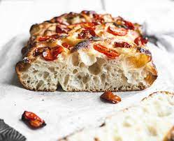

Recetas Saladas
- 400 g de harina tipo 00.
- 30 g de levadura de cerveza.
- 250 ml de agua a temperatura ambiente.
- 1 cucharadita de azúcar.
- 1 cucharadita de sal.
- 30 ml de aceite de oliva extra virgen.
- 50 ml de agua.
- Sal gruesa.
- Romero.
Focaccia
Ingredientes
- Disolver la levadura en agua y azúcar.
- Espolvorear con la harina tamizada y comenzar a unir con una espatula la masa.(Se debe tener en cuenta que la masa de la focaccia es más blanda que la de la pizza.)
- Una vez que tengamos una masa unida, aceitar las manos y hacer pliegues. Dejar descansar la masa 20min y repetir 5 veces.
- Dejar la masa en un bowl tapada con film leudando una noche.
Preparación:
- Aceitar las manos con aceite y distribuir la masa en una placa para horno aceitada. Dejar leudar la focaccia por aprox. 1 hora en un lugar cálido y seco.
- Luego precalentar el horno a 250°C. Aceitar una vez más las manos y, con la punta de los dedos, hacer pequeños agujeros (sin perforar la masa) en toda la superficie de la focaccia.
- Condimentar con sal gruesa y romero, hornear por 10 minutos y luego cepillar la superficie de la focaccia con una emulsión de agua y aceite de oliva extra virgen preparada previamente.
Horeneado:
